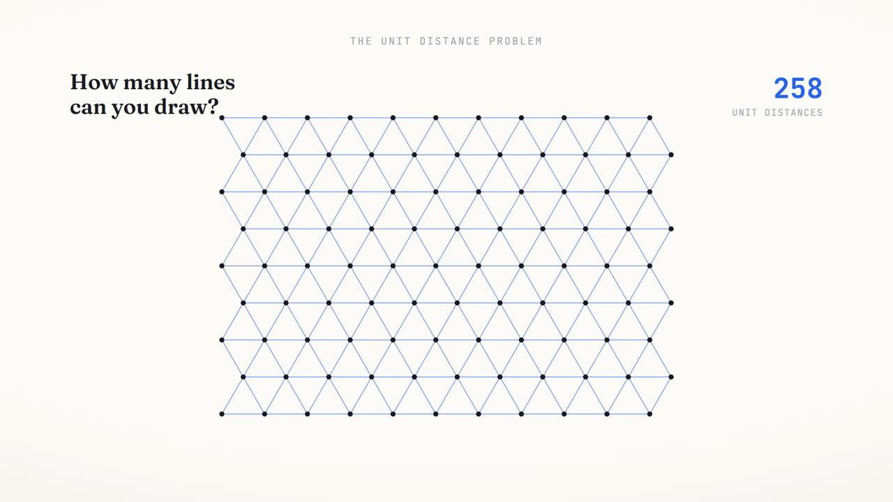

A child can ask it: scatter dots on a page and connect every pair
the same distance apart, how many lines can you draw? Paul Erdős asked it in
1946, guessed the answer, and for eighty years everyone believed him. In 2026 a
machine proved him wrong, not with geometry, but with number theory reached for
down a path humans had dismissed.
Take a hundred dots and place them anywhere on a sheet
of paper. Pick a distance, say one inch, and draw a line between every pair of
dots that happens to be exactly that far apart. Some arrangements give you only
a handful of lines; others give you a great many. The question Erdős asked is the
greediest possible version: over all arrangements of n dots, what is the
largest number of these unit distances you can force to appear at once?
Write that maximum as U(n). It is one of the most
famous unsolved problems in combinatorial geometry, and part of its fame is that
the question is so plain. A ten-year-old understands it in a sentence. Yet the
answer turns out to touch number theory so deep that only a handful of people
alive can follow every step.
A puzzle a child could pose
The picture below is the object itself. Every dot sits on a triangular grid,
and a line is drawn only between two dots exactly one unit apart. This is called
the unit distance graph of the point set. Count the lines as they draw
in: even a small, tidy arrangement produces far more of them than there are
dots.
The unit distance graph. Ninety-nine dots on a triangular
grid; a line joins every pair exactly one unit apart. Each interior dot has
six such neighbors, so the lines pile up quickly. The counter is the true
number of unit distances in this arrangement. The whole of Erdős's problem is:
how large can that counter grow, per dot, as the number of dots increases?
So the quantity to understand is not the number of dots but the number of
lines per dot. If every dot could be joined to a fixed number of others,
U(n) would grow like n, in proportion to the dots. The
entire drama of the problem lives in whether you can do meaningfully better than
that, and if so, by how much.
The trick is to choose a rich distance
Erdős found the first good construction himself, and it is worth seeing
because everything that came eighty years later is a descendant of it. Put the
dots on an ordinary square grid of whole-number coordinates. Now the number of
unit distances depends entirely on one clever choice: which distance you call
"one".
Suppose you set the unit to be the square root of some whole number
m. Then two grid points are one unit apart exactly when
the horizontal and vertical steps between them, call them a
and b, satisfy a² + b² = m. So
the number of neighbors a single dot has is the number of ways to write
m as a sum of two squares. Choose an
m that can be written many ways, and every dot in the
grid suddenly has a crowd of partners at exactly distance one.
The engine of the whole subject is an arithmetic fact dressed
as geometry: a single point has one unit-distance neighbor for every way its
squared length can be written as a sum of two squares.
Why some distances are rich and others are poor
The interactive figure makes this concrete. Fix a center dot at the origin of
a grid and draw the circle whose radius squared is N.
Every grid point the circle passes through is one unit-distance neighbor of the
center. Drag the slider, or press a preset, and watch how wildly the count
swings: most values of N give none or a few, but the
right ones give a dozen, then sixteen, then thirty-two.
Sum of two squares, live. The count is
r₂(N), the number of integer points on the circle of
radius √N. It is 4 at N=1,
8 at N=5 (because 5 = 1²+2²), 12 at
N=25 (25 = 3²+4² = 5²+0²), and it keeps climbing as
you multiply together primes of the form 4k+1. The richest distances are built
from many such primes at once. That is the lever Erdős pulled.
How rich can it get? Multiply together the first several primes that are one
more than a multiple of four, primes like 5, 13, 17, 29, and the number of
representations doubles with each one you add. The catch is that these primes
grow, so the whole number m grows fast too, and you need
a grid large enough to hold it. Working the trade-off out, Erdős showed that
n points can be arranged to have about
n1+c/log log n unit distances. That exponent
is a shade more than one, and it creeps upward with n,
but agonizingly slowly. The double logarithm is the arithmetic of the plane
running out of room.
There is a cleaner way to say what this construction is, and it is the door
through which the new proof walks. The grid of whole-number points is the ring of
Gaussian integers, the complex numbers a + bi
with a and b whole. Distances
between grid points are absolute values of differences of Gaussian integers, and
a rich unit distance is a Gaussian integer of that length written many ways. Hold
that thought: the plane is one particular number system, and its arithmetic is
what limits Erdős's trick.
The ceiling everyone believed
On the other side sits the best proven upper bound. In 1984 Spencer,
Szemerédi and Trotter proved that n points can have at
most about n4/3 unit distances, a clean
geometric ceiling that has never been improved. So the truth about
U(n) lives somewhere in the gap between "a shade above
n" and n4/3.
Erdős had a firm opinion about where in that gap the truth lay. He conjectured
that U(n) is at most n1+o(1):
in words, that his own grid was essentially the best you could ever do, and that
the true exponent sits at the very bottom of the gap, indistinguishable from one.
The chart shows the landscape and the pin.
The landscape of the problem. Drawn on doubly-logarithmic
axes so that a pure power of n is a straight line. The
proven ceiling n4/3 is the steep dashed
line; Erdős's grid and his conjecture both hug the shallow line near
n. The conjecture is the claim that the truth never
escapes the neighborhood of that shallow line. The disproof is a single fact:
it does escape.
One line in a paper, a prize, and eighty years of trying
The problem carried real weight. Erdős offered money for it, eventually 500
dollars, and it is problem number 90 on the community's register of his questions
at erdosproblems.com. Brass, Moser and Pach call it "possibly the best known and
simplest to explain problem in combinatorial geometry." Almost everyone who
worked on it believed the conjecture was true, and so, as Thomas Bloom notes in
the paper, nearly all the human effort went into trying to prove the
ceiling, not to break it. Erdős himself once wrote that a bound of
n1+o(1) would be "very difficult to prove" if
true, hinting he could imagine being wrong, but the decades of failed
improvements only hardened the belief.
1946
Erdős raises the unit distance problem
$500
the prize attached to it, problem #90
n4/3
best proven upper bound, since 1984
~80 yr
the conjecture stood, believed true
The answer came from a machine
In May 2026 the answer arrived, and it did not come from a mathematician. An
internal reasoning model at OpenAI, given the bare problem, produced an original
argument that disproves the conjecture. Its output was a proof of roughly
a hundred and twenty-five pages. Nine mathematicians, Noga Alon, Thomas Bloom,
Timothy Gowers, Daniel Litt, Will Sawin, Arul Shankar, Jacob Tsimerman, Victor
Wang and Melanie Matchett Wood, then read it, checked every step, and digested it
down to a clean argument of a few pages. That digested version is
the paper this article follows.
Here is exactly what was proven, stated plainly.
What was believed (Erdős, and nearly everyone)
U(n) is at most n1+o(1).
The exponent creeps above one only by a vanishing amount.
The square grid is, in essence, the best construction.
What is now proven (Theorem 1.1)
There is a fixed ε > 0 and arrangements of
n points with at least
n1+ε unit distances, for
n as large as you like.
So the exponent is bounded strictly away from one. The conjecture is
false.
The construction is not a grid at all.
Gowers, a Fields medalist, wrote that he would have recommended the paper for
the Annals of Mathematics, the field's most selective journal, "without
any hesitation," and called it "a milestone in AI mathematics." Alon called the
result "an outstanding achievement."
Leave the plane for a stranger number field
The idea is best seen as a generalization of Erdős's own. Recall that his grid
is the Gaussian integers, and that the richness of a distance is how many ways a
number in that system is a sum of two squares. That richness grows only like the
double logarithm because the plane's arithmetic, the arithmetic of
a + bi, is fixed and modest.
The model's move is to stop fixing the number system. Instead of the Gaussian
integers, it works inside the whole numbers of a larger
number field, a self-contained arithmetic world built by adjoining new
algebraic numbers to the rationals, and it lets that world grow. In a field of
higher and higher degree, the analog of "sum of two squares" can be
written not in a doubly-logarithmic number of ways but in a number of ways that
grows exponentially in the degree. The lever Erdős pulled a little, the
model pulls arbitrarily hard.
Erdős varied which integer he used and kept the number system
fixed. The machine kept a small set of primes fixed and varied the number system,
letting its degree run to infinity. That inversion is the whole idea.
One subtlety, flagged by Will Sawin, is why the degree has to grow rather than
staying fixed at some clever field. If you fix a field, the prime-counting that
governs the construction just reproduces Erdős's bound; there is no advantage.
The gain only appears when you take a sequence of fields of growing
degree while keeping their arithmetic complexity, their root discriminant,
under control. Producing such a sequence is the hard part, and it is where class
field theory enters.
The construction is the shadow of a higher lattice
How does arithmetic in a high-degree field become dots in a flat plane? The
whole numbers of a field of degree f naturally live as a
lattice in a space of dimension f, not in two dimensions.
To get a planar point set you fix one way of viewing that field inside the complex
numbers and project: you cast the shadow of the high-dimensional lattice down onto
the plane. Two projected points are one unit apart when the corresponding field
elements differ by an algebraic number of absolute value exactly one. Because the
field is chosen so that a great many of its elements have absolute value one, and
they arise as differences within a bounded window, the shadow is dense with unit
distances, denser than the plane's own arithmetic could ever be.
From a high dimension down to the page. A lattice living in
many dimensions (drawn here tilted, above) is projected straight down onto a
line standing in for the plane. The many elements of absolute value one become
many pairs of projected points at the same distance. The richness that Erdős
could only coax out of the plane is imported wholesale from a bigger world and
dropped onto the flat page.
For the fields to be usable the projection has to be well behaved, and the
field has to be of a special type, a CM field, so that an element of
absolute value one in a single view has absolute value one in all views at once.
That is what lets the counting close. The construction then reads off a sequence
of planar point sets, one for each field in the tower, with more and more unit
distances per point.
Where the exploding richness comes from
The remaining question is whether fields of growing degree, bounded arithmetic
complexity, and enough elements of absolute value one actually exist. They do, and
the tool is a classical and beautiful one: infinite class field towers.
A theorem of Golod and Shafarevich, from the 1960s, guarantees infinite towers of
number fields whose root discriminant stays bounded while the degree marches to
infinity. Feeding in a rational prime that splits completely all the way up the
tower supplies exactly the abundance of absolute-value-one elements the counting
needs. The figure sketches the shape of the argument: a fixed handful of primes
seeds a tower, and the useful elements multiply as you climb.
Two ways richness can grow. In the ordinary whole numbers
(the plane), the number of representations grows like a slow trickle, the
double-logarithm that caps Erdős's grid. Climbing an infinite class field tower
of growing degree, the same kind of count grows exponentially. The construction
simply needs the crossing to happen, and it does.
That the needed towers exist "is not the novel part of the argument," the
authors are careful to say; such towers, and even ones with infinitely many
completely split primes, were built long ago. The novelty is the recognition that
this well-known machinery answers a question in plane geometry that no one had
thought to phrase in its terms. As Melanie Matchett Wood puts it, the work is "a
beautiful application of number theory to a natural, concrete question," and a
reminder of "how frequently interesting and powerful things happen mathematically
when one applies ideas from one field to another."
False by a hair, but false
There is one more fact that gives the result its peculiar character. The
construction beats Erdős's ceiling by an almost unimaginably small amount. Worked
all the way through, the paper's explicit exponent is
1 + 6.24 × 10−38. That is roughly one part in
ten thousand trillion trillion trillion above one. The construction is an
existence proof, not a practical recipe: it does not exhibit a small point set you
could draw, it proves that arrangements beating the conjecture exist. In
mathematics that distinction does not matter. A conjecture that says "at most
n1+o(1)" is refuted the instant a single fixed
positive exponent survives, no matter how tiny.
1 + 6.24e‑38
the proven exponent from equation (2.2)
125
pages of raw machine proof
9
mathematicians who digested it to a few
The parameters behind that number are concrete. The paper takes the ramified
primes to be T = {3, 5, 7, 11, 13, 17}, a rational prime
101 that splits completely in the field
Q(√5, √13, √17, √21, √33), and builds its tower from
there. None of it is optimized; the exponent only has to clear one.
Quantity
Meaning
Value in the paper
U(n)
max unit distances among n points
the object of study
Erdős grid
lower bound he proved
n1+c/log log n
Spencer–Szemerédi–Trotter
upper bound, 1984
O(n4/3)
Erdős conjecture
believed ceiling
n1+o(1)
Theorem 1.1
the disproof
≥ n1+ε
ε, equation (2.2)
explicit surplus exponent
6.24 × 10−38
The film
A three-minute explainer of the whole story, from the child's puzzle to the
class field tower, in the calm register of a science documentary.

How an AI broke an 80-year-old conjecture. Narrated, with
every figure redrawn from the paper. Vizuara Research.
Where this sits in prior work
The construction did not fall from the sky; it stands on a tradition of using
number fields to build combinatorial objects. Venkatesh used infinite class field
towers to construct unusually dense sphere packings; Litsyn and Tsfasman, and
later many others, used lattices from such towers to build good error-correcting
codes; Kopp and collaborators used ray class fields to build equiangular lines;
Belolipetsky and Lubotzky used class field towers to count lattices in Lie groups.
Alon, Bucić and Sauermann's recent study of unit and distinct distances under
general norms is the nearest neighbor in spirit. The new proof is a fresh member
of that family, and, as Arul Shankar observes, it inverts the usual arithmetic
statistics: rather than fixing a field and counting split primes, it fixes a prime
and counts fields in which it splits.
It is not a new geometric idea. As several of the authors note, the
proof introduces no new geometric tool of the kind a proof of the conjecture
would likely have needed. It is a clever import from number theory, not a new
way of seeing the plane.
The margin is astronomically small and non-constructive. The exponent
exceeds one by about 6 × 10−38. No explicit,
drawable point set beating the conjecture is produced; the theorem asserts that
such sets exist.
It does not settle the true exponent. The gap between the new lower
bound and the n4/3 ceiling remains vast. We
now know the truth is not at the very bottom of the gap; we still do not know
where in it the truth lies.
The three-dimensional problem is untouched. The same field-theoretic
approach runs into genuine obstacles in dimension three, discussed in the
reflections by Sawin and Shankar; the analogous questions there stay open.
Provenance and citation are unsettled. Matchett Wood raises that a
machine "familiar" with the whole literature does not cite the prior work whose
ideas it uses the way a human author would, a norm the community still needs to
work out.
Appendix: sums of two squares, from scratch
Everything in the argument rests on one elementary fact, so it is worth being
able to compute it yourself. The number of ways to write a whole number
N as an ordered sum of two squares, counting signs and
order and zero, is written r₂(N). There is a clean rule
for it. Factor N. Primes of the form
4k+3 (like 3, 7, 11) must appear to an even power or
r₂(N)=0. Otherwise, ignore the factor of two and the
4k+3 primes, and count the divisors built from the
4k+1 primes (like 5, 13, 17): if there are
d of them, then r₂(N) = 4d.
So a distance is rich exactly when its square is a product of many distinct
primes of the form 4k+1. Each such prime doubles the count
d. That is why 5 gives 8, why 5·13 gives 16, and why
5·13·17 gives 32. The interactive figure above computes exactly this rule by brute
force; the table shows a few landmark values.
N
factorization
r₂(N)
why
1
1
4
the four axis points
5
5
8
one 4k+1 prime
25
5²
12
3²+4² and 5²+0²
65
5 · 13
16
two 4k+1 primes
325
5² · 13
24
more room
1105
5 · 13 · 17
32
three 4k+1 primes
21
3 · 7
0
two 4k+3 primes, odd powers
The leap of the new proof is to ask the same question not in the whole numbers
but in the integers of a number field, where the analog of this doubling can be
made to run exponentially in the field's degree. Everything else, the CM
condition, the class field tower, the projection, is machinery in service of that
one amplified count.
Reproduce it
The mathematics is fully contained in the digested paper; no code or compute is
needed to verify it, only algebraic number theory at the level of a first or
second graduate course. That was, the authors note, part of what made checking it
feasible.
The paper. "Remarks on the Disproof of the Unit Distance Conjecture,"
Alon, Bloom, Gowers, Litt, Sawin, Shankar, Tsimerman, Wang, Wood, 2026.
PDF in this repository.
The original machine proof. Produced by an internal OpenAI reasoning
model; see the
OpenAI writeup.
The figures on this page are drawn from the paper's own statements and
the elementary r₂ rule; the source is the single
index.html in
the GitHub repository.